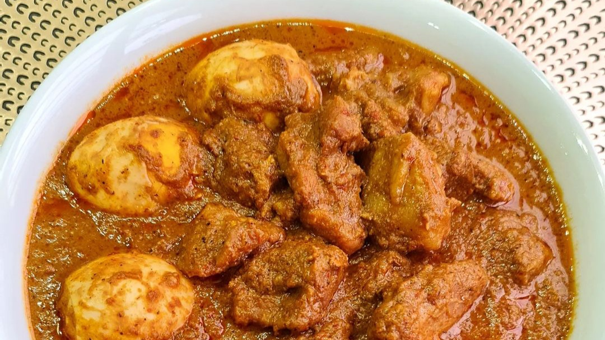

Rendang
Tekstur rendang daging sapi ini empuk. Rempah dan bumbu halusnya pun meresap sempurna ke dalam potongan daging, sajikan rendang dengan daun singkong rebus, balado teri, dan sambal ijo padang.
Lihat produk